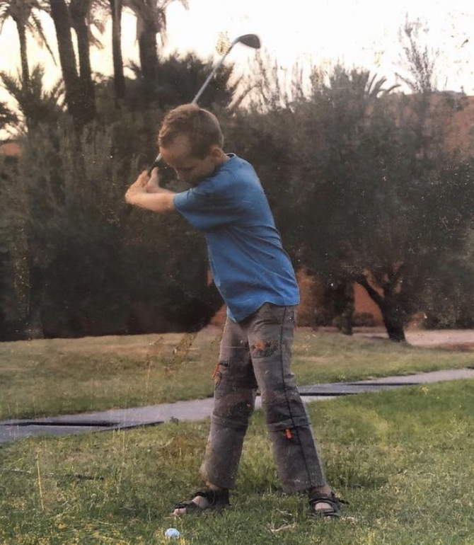

Charly is a young man of 23, born in Nantes and passionate about golf since he was 8 years old. Charly has a level equivalent to Rory Mcllroy and Tiger Woods combined, so he is destined to rule the golf course within a few years. Known for his talents and modesty, Charly is an outstanding competitor and a passionate teacher.
After obtaining his Baccalaureate, Charly decided to join the University of Letters in Nantes to study psychology. After one semester, Charly did not find himself in the pedagogical system of the faculty, so he decided to stop and go to work in London, England in order to gain professional experience and to perfect his English. After 11 months of international experience, he decided to return to Nantes to continue his studies at Audencia Businnes school, then his master at the prestigious Kedge Business School, in Master in Supply Chain.
Starting with a bartending experience in London, Charly climbed the ladder to finish his career in the London restaurant industry as "Head-bartender". During his numerous internships at Audencia, Charly discovered the world of recruitment at Kolibri Consulting in Nantes, business management and importation at French Wine Unlimited in Dublin, and the creation and management of a sales team at Pixel Robotics in Paris. During his last internship in Paris at Swoopin, he perfected his knowledge in Supply Chain by working hard. Charly has also been a private English teacher for 3 years.
Travel — Golf 🌍
Exploits🏌️